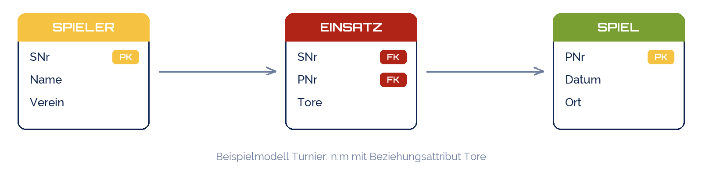

Good morning!
Nur das Schöne wird die Welt retten!
Fjodor Dostojewski
Nicht verzagen, Doc Alvers fragen!
Informatik — FOS 12
Abschluss Lernbereich 1: vom Realweltausschnitt zur Auswertung — in einer Woche
Nicht verzagen, Doc Alvers fragen!
Kapitel 01
Alles aus sieben Wochen in einem Projekt
Nicht verzagen, Doc Alvers fragen!
Einen Realweltausschnitt eurer Wahl: Praktikum, Verein, Nebenjob, Sammlung, Turnier …
Mindestens drei Entitätstypen, eine n:m-Beziehung, je Tabelle fünf Datensätze
Die komplette Kette: Beschreibung → ER-Modell → Tabellen → SQLite → Abfragen
Am Ende: Peer-Review — ihr prüft das Modell eines anderen Teams
Teams zu zweit, Abgabe als schule-ähnliche .db-Datei plus ein Blatt Doku
Nicht verzagen, Doc Alvers fragen!
| Schritt | Was ihr tut | Ergebnis | Aus Woche |
|---|---|---|---|
| 1 Beschreiben | Ausschnitt in fünf bis acht Sätzen | Auftragstext | 6 |
| 2 Modellieren | Entitäten, Attribute, Beziehungen, Kardinalitäten | ER-Diagramm (Papier/Tool) | 6 |
| 3 Überführen | drei Regeln anwenden, Schlüssel markieren | Tabellenschema mit PK/FK | 7 |
| 4 Prüfen | 1NF, 2NF, 3NF durchgehen | Häkchen je Normalform | 8 |
| 5 Bauen + Fragen | CREATE TABLE, INSERT, fünf SELECTs | projekt.db + Abfrageblatt | 4, 5 |
Reihenfolge einhalten: wer bei Schritt 5 anfängt, baut die Kursliste von Woche 3
Jeder Schritt hat ein Artefakt — das ist eure Doku, nichts extra schreiben
Nicht verzagen, Doc Alvers fragen!
Kapitel 02
Woran die Datenbank gemessen wird
Nicht verzagen, Doc Alvers fragen!
Pflicht
ER-Diagramm mit Kardinalitäten und Schlüsseln
Tabellen in 3NF, Fremdschlüssel mit REFERENCES
PRAGMA foreign_keys = ON und ein provozierter Fehler
Fünf Abfragen: WHERE, ORDER BY, COUNT/GROUP BY, ein JOIN, eine freie
Kür
Beziehungsattribut an einer n:m-Beziehung
CHECK-Regeln für Wertebereiche
Abfrage über drei Tabellen
Ein Diagramm aus einer GROUP-BY-Abfrage
Nicht verzagen, Doc Alvers fragen!
-- 1 WHERE: alle Spieler eines Vereins SELECT Name FROM Spieler WHERE Verein = 'SV Blau-Weiß'; -- 2 ORDER BY: Spiele nach Datum, neueste zuerst SELECT * FROM Spiel ORDER BY Datum DESC; -- 3 GROUP BY: wie viele Spiele pro Ort? SELECT Ort, COUNT(*) AS Anzahl FROM Spiel GROUP BY Ort; -- 4 JOIN: wer hat in welchem Spiel gespielt? SELECT s.Name, p.Datum FROM Spieler s JOIN Einsatz e ON e.SNr = s.SNr JOIN Spiel p ON p.PNr = e.PNr; -- 5 frei: Spieler mit den meisten Einsätzen SELECT s.Name, COUNT(*) AS Einsaetze FROM Spieler s JOIN Einsatz e ON e.SNr = s.SNr GROUP BY s.SNr ORDER BY Einsaetze DESC LIMIT 3;
Nicht verzagen, Doc Alvers fragen!

Drei Tabellen reichen für die Pflicht — die Kür steckt in Tore und CHECK (Tore >= 0)
Euer Thema darf anders sein: Hauptsache drei Entitäten und eine echte n:m-Beziehung
Nicht verzagen, Doc Alvers fragen!
Kapitel 03
Ein fremdes Modell prüfen — mit Checkliste, nicht mit Gefühl
Nicht verzagen, Doc Alvers fragen!
| Nr. | Prüfpunkt | ja/nein | Bemerkung |
|---|---|---|---|
| 1 | Jeder Entitätstyp hat einen Primärschlüssel | ||
| 2 | Jede Beziehung hat eine begründete Kardinalität | ||
| 3 | n:m-Beziehungen sind eigene Tabellen mit zwei Fremdschlüsseln | ||
| 4 | Keine Liste in einer Zelle (1NF), keine Teil- oder Kettenabhängigkeit (2NF/3NF) | ||
| 5 | Die fünf Abfragen laufen und liefern das, was die Frage verlangt | ||
| 6 | Ein Fremdschlüssel-Fehler wird vom DBMS abgewiesen |
Zwei Teams tauschen .db-Datei und Diagramm — 20 Minuten prüfen, 5 Minuten Rückmeldung
Rückmeldung nach dem Muster: Was ist gut? Was fehlt? Ein konkreter Vorschlag.
Nicht verzagen, Doc Alvers fragen!
Stunde 1: Thema wählen, Auftragstext schreiben, ER-Diagramm zeichnen (Schritte 1 und 2)
Hausaufgabe: Überführung und Normalform-Check auf Papier (Schritte 3 und 4)
Stunde 2: Tabellen in SQLite anlegen, Daten eintragen, fünf Abfragen (Schritt 5)
Letzte 25 Minuten: Peer-Review und Rückmeldung
Abgabe: projekt.db, ER-Diagramm als Foto, Abfrageblatt — bis Freitag im Teams-Kanal
Nicht verzagen, Doc Alvers fragen!
Beschreiben, modellieren, überführen, prüfen, bauen — in dieser Reihenfolge, nie andersherum.
Merksatz
Nicht verzagen, Doc Alvers fragen!
Themen: DBMS-Bedienung (SQL), ER-Modell, Normalisierung — genau die fünf Schritte
Typische Aufgabe: Text → ER-Diagramm → Tabellen → zwei SQL-Abfragen
Übungsmaterial: eure eigene Mini-Datenbank und die Pizzeria-Aufgaben
Fragen sammeln — Wiederholungsstunde vor der Klausur
Nicht verzagen, Doc Alvers fragen!